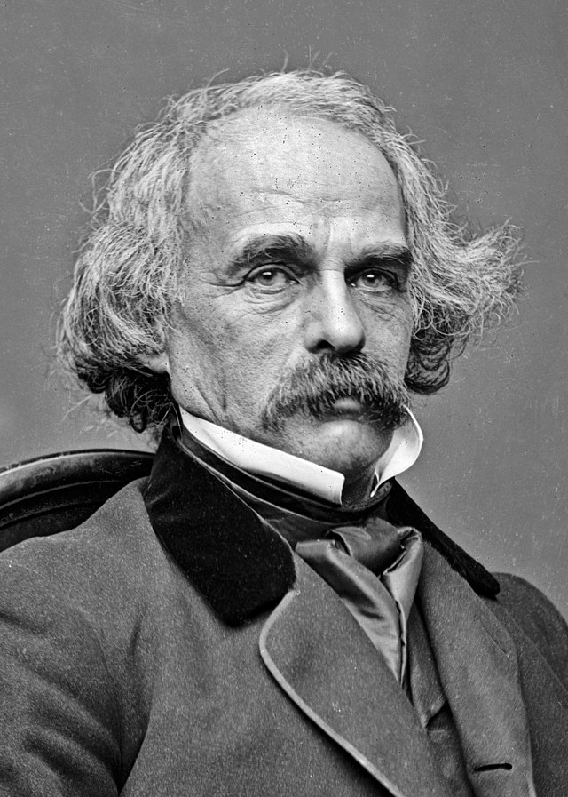

.Nói đến văn học Mỹ, người ta không thể không nhìn thấy từ xa, trên những ngọn sóng của Đại Tây Dương, ngọn hải đăng này. Là hậu duệ những kẻ tiên khu của đạo Tin lành, thanh tra ngành hải quan và trước hết là một nhà văn đầy sức quyến rũ. Nathaniel Hawthorne ( 1804-1864) để lại dấu ấn của mình trên những tác phẩm của Herman Melville và Edgar Allan Poe, những kẻ khai sáng thời hoàng kim của văn học Mỹ. Ông là nhà văn siêu tuyệt của văn học cổ điển Mỹ.
Quá lớn và như thể bị bỏ hoang trong cái ánh trắng lạ lẫm của vùng New-England Salem là một thành phố tẻ nhạt với những đường phố lớn vắng vẻ, những đợt gió đông sắc lạnh quật liên hồi. Những bụi cây mâm xôi đã bắt đầu lan ra trên vỉa hè của sở hải quan. Những cửa hàng nhỏ, bắt đầu bày bán những đồ kỷ niệm thay cho những dụng cụ đi biển. Thảng hoặc một chiếc thuyền mành còn ghé bến, một chiếc thuyền hai buồm cũ kỹ. Tiếng cười của một ông chủ thuyền vang lên trên bến cảng. Nhưng cái thành phố ma chẳng bao lâu lại chìm vào giấc ngủ.
Biểu tượng của trạng thái hôn mê này là văn phòng của một sở Đoan đã trở nên vô tích sự, mở ra trên bến tàu đang lụi tàn. Những nhân viên đáng kính của nó, đứng tựa lưng vào tường theo hàng một, tiêu phí thời gian bằng một kiểu trò chuyện rầu rĩ, bị gián đoạn bởi tiếng ngáy. Một thương nhân ác độc đã ném cát vào những con người này, “họ giống như những con chó già ngủ trong bóng râm hay dưới nắng”. Và ông “sếp” của họ, viên thanh tra hải quan, thì bản thân ông ta cũng bị bệnh cứng khớp hành hạ. Trong giấc ngủ trưa vĩnh hằng của Salem, ông sợ mình đánh mất linh hồn và tài năng. Vì cái nghề thực sự của ông là viết lách và tên của ông là Nathaniel Hawthorne.
Tuy nhiên, viết về cái gì? Người ta không thể, trong cái thôn nhỏ ngái ngủ này, mơ tưởng đến một tương lai nào. Còn hiện tại cũng hầu như chẳng mang lại gì cho khả năng tiềm ẩn của mình: Ở Salem, cuộc sống xã hội bị đông cứng, sự bỗ bã dân chủ xóa sạch đi mọi sự nổi trội, cái không khí lạnh lẽo thật khó thở đối với nghệ thuật. Chỉ còn lại quá khứ. Và đúng là thế. Văn phòng nhà Đoan có một phòng lưu trữ, tại đó có những gói hồ sơ hành chính nằm mốc meo trong các thùng gỗ tròn. Tất cả là một thứ giấy xám xịt khiến cho cái ông công chức thất nghiệp này cảm động, rồi bỗng một miếng vải đỏ hình chữ A viết hoa đã làm mắt ông sáng ngời lên. Thế là đủ để đốt lên trí tưởng tượng: Ở đây đã xuất hiện “một ngôi làng bị nuốt chửng bởi những loài cỏ dại của xứ sở mây mù, với đám cư dân tưởng tượng để sống trong những căn nhà bằng gỗ”, và rồi có câu chuyện người ta dùng thanh sắt hình chữ A nung đến sáng trắng in dấu sỉ nhục lên một phụ nữ gian dâm. Cứ thế viên thanh tra nhà Đoan ngồi vào bàn viết và nhìn lại qua vai mình cái thành phố Salem của thời xưa: Một thành phố của Kinh Thánh mang trên mình nó ngọn lửa của trời.
Trong gia hệ của Nathaniel Hawthorne, có một hệ mạch mơ hồ của những thuyền trưởng. Nhưng tiếp đó, một ông tằng tổ ghê gớm là William đã đổ bộ lên New England vào năm 1630. Lính tráng, quan tòa, nhà lập pháp, ông ta đã trừ khử dân da đỏ, hành hình các tín đồ Tin lành, triệt hạ những khu rừng… sau đó là đến John, người nổi tiếng vì thiêu sống những tay phù thủy, qua đó, “máu đã để lại một dấu vết sâu đến nỗi nó vẫn còn ghi dấu lên những bộ xương khô tại nghĩa địa phố Charter”. Nathaniel nắm bắt họ chính xác, không phải một tay cầm Kinh Thánh còn tay kia cầm gươm, mà đã xáo trộn họ với nhau: Cái tội lỗi theo Thanh giáo là không phân biệt giữa luật lệ con người và luật lệ của Chúa trời. Tuy nhiên, chính những mối lo âu này trở thành những cái dẫn dắt ông để gặt hái, ngay cả trước khi viết Nét chữ ô nhục, những truyện kể lịch sử về nguồn gốc dân tộc Mỹ.
Những câu chuyện đầy bấn loạn. Đây là John Endicott, chỉ huy đám dân binh của Salem, nổi tiếng bằng việc nhổ đi một cây đời mà quanh nó một tuổi trẻ lầm lạc đã nhảy múa, tiếp đó là những cây thánh giá giáo hội La Mã và những lá cờ: Những cử chỉ yêu nước vĩ đại, nhưng sau những cái đó người ta nhận ra những thớ thịt phụ nữ hằn lên những vết roi da, những chiếc tai của những chàng trai bị cắt, những chiếc cổ để lại sẹo dây thừng, những chiếc giá treo cổ, chiếc đài bêu riếu kẻ phạm tội, và hồi quang của đám cháy tại các làng mạc da đỏ. Đây là một chàng anh hùng rơm mà niềm tin thật mãnh liệt của anh ta là đi đến một cuộc hẹn hò ban đêm với ma vương, để tìm ra ở đấy không chỉ những tay phù thủy mà những khuôn mặt quen thuộc của dân địa phương, những cây cột của kho đồ thánh giống như những cây cột của túp lều. Từ đó, ở những dấu hiệu nào đó, chỉ còn lẫn lộn không biết đâu là Chúa trời, đâu là Quỷ sứ. Bàn tay con người này, rốt cục, là có mặt khắp nơi: Trong dấu vết in trên má của một cô vợ trẻ, trong cái định mệnh muốn rằng một người cha hiền từ vô tình giết con trai tại cái chỗ mà ngày xưa ông đã bỏ rơi một người bạn đang hấp hối.
Tại sao lại có những dấu ấn của cái huyền thoại tối tăm của Thanh giáo? Henry James đã đọc Những cuốn sổ tay Mỹ (xem ra Hawthorne đã không ký tên mình vào đó) và ngạc nhiên về những câu văn trơn bóng của nó, hoàn toàn thiếu vắng sự hoa mỹ. Ông thấy trong chủ nghĩa Calvin huyền hoặc của Những truyện kể một thủ thuật thuần khiết, nhằm mang lại chiều sâu cho một tác phẩm thiếu vắng chất bí ẩn. Ngược lại Melville viết: “Bất chấp ánh mặt trời da đỏ tràn ngập phía bên này của tâm hồn Hawthorne, mặt bên kia của ông, giống như nửa tối một quả cầu, bị che phủ bằng một màu đen mười lần tối hơn”.
Mới đây, khi xuất bản tập Truyện kể của Hawthorne tại Pháp cùng với Những cuốn sổ tay Mỹ, trong lời giới thiệu cho tậpTruyện kể, Pierre-Yves Pétillon, với đầu óc bác học, đã không cắt đứt giữa hai cách lý giải đó. Điều trớ trêu của Hawthorne là khi ông vẽ ra chân dung của tổ tiên mình với vẻ mặt tối sầm, đã đưa lại cái lý cho James. Tuy thế, thiên về Melville hơn, người ta có thể đưa ra hàng ngàn lời tuyên ngôn rõ ràng của Hawthorne: Tin rằng nhờ những sự ăn năn từ tội lỗi mà tâm hồn con người rộng mở, và người chắt của những tín đồ Thanh giáo diễn giải rằng “mỗi trái tim ẩn chứa một nấm mồ và một ngục thất, để rồi ánh sáng, âm nhạc và những niềm vui từ trên cao săn đuổi chúng ra khỏi ký ức chúng ta”.
Có hai thế giới ở Hawthorne, hẳn vậy. Nhưng không phải là hai thế giới tách biệt: Bản thân ông đã từ chối không phân cách chúng trong thiên tự thuật tuyệt vời đã khép lại tập truyện này. Trong con mắt ông, chúng hòa trộn vào nhau trong căn phòng mà nhà văn làm việc vào buổi tối. Lọ mực, những cuốn sách trên bàn, giỏ đựng những tác phẩm bỏ đi: Ở đấy không thể nào hiểu sai được. Tuy nhiên, giữa ánh bập bùng của lửa than và của ánh trăng, mọi thứ đều biến dạng. Cái không gian quen thuộc “phần nào đó chập chờn giữa thế giới có thực và những xứ sở thần tiên”. Giữa thức và ngủ, ngọn lửa ấm và ánh sáng lạnh, được thay thế cho cái tôn giáo của tổ tiên, đồng thời cho phép tạo ra khoảng cách và sự vỗ về. Khoảng cách đối với “đầu óc tối tăm của tổ tiên, những người đã dệt tấm vải của đời mình mà không trộn vào đấy những sợi chỉ màu hồng hay trang kim”. Vỗ về, tùy theo tên gọi của nó, cũng không thể nào nhổ ra khỏi trái tim mà nét chữ ô nhục đã đính lên ngực của một người phụ nữ bị kết tội gian dâm.
Người ta không thể hiểu được văn học Mỹ ngày nay nếu không biết đến tác giả của tuyệt tác Nét chữ ô nhục (The Scarlet Letter) vốn là cội nguồn của nó.
Liệu người ta có thể nghĩ đến nước Mỹ về văn học mà lại vắng bóng Nathaniel Hawthorne không? Có lẽ là không thể thế được. Chính là xuất phát từ ông, vào giữa thế kỷ XIX, mà văn học Mỹ mới có sự tự lập, thoát khỏi sự phụ thuộc hay là vai trò cái đuôi của văn học Anh trên mảnh đất Thế Giới Mới. Nét chữ ô nhục (The Scarlet Letter) (tên sách do các dịch giả miền Nam dịch ra trước giải phóng từng nằm trong giáo trình chính về văn học Mỹ), tác phẩm làm cho Hawthorne lừng danh 1850, và khám phá hiện trạng của chủ nghĩa Thanh giáo vùng New England (Miền đất mới nước Anh, nơi lập cư của những tín đồ Thanh giáo Anh muốn bảo vệ những tín điều của mình) đã ghi dấu sự ra đời của tác phẩm này. Những ảnh hưởng của tác giả, vốn sinh ra ở Salem, hậu duệ của một người bị án tử hình là hành nghề phù thủy, đã vượt qua cái giới hạn không gian đó.
Hơn nữa Salem và chủ nghĩa Thanh giáo là hai điều kiện cơ bản để tạo thành tính cách của Hawthorne, vốn tên cúng cơm là Hathorne cũng giống như Faulkner vốn tên là Falkner. Faulkner thuộc một thế kỷ khác, lại sống ở miền Nam. Tuy nhiên, ông cũng là hậu duệ của gia đình theo Thanh giáo ở Salem. Lúc sinh thời, Hawthorne là bạn của Ralph Waldo Emerson và Henry David Thoreau, những tác gia lớn thời hoàng kim của văn học Mỹ, nhưng trước hết là bạn của Herman Melville, người láng giềng của ông ở vùng New England. Melville đã đề tặng ông tuyệt tác Moby Dick: “Bày tỏ lòng kính ngưỡng của tôi đối với thiên tài của ông”. Tiếp theo, là một sự nối tiếp kéo dài của những nhà văn lớn của Mỹ nói rằng họ mắc nợ Hawthorne, bắt đầu với Henry James.
Còn bây giờ, khi người hỏi William Styron rằng những nhà văn nào mà ông yêu thích, thì Styron kể Hawthorne, là người đầu tiên. “Hawthorne là nhà văn cổ điển Mỹ kiệt xuất”, Pierre-Yves Petillon, người viết lời giới thiệu cho tác phẩm Truyện kể và ký sự của Hawthorne vừa dịch sang tiếng Pháp, dày 640 trang bảo vậy. Ông viết tiếp: “Tất cả các nhà văn sau Hawthorne có cùng chung tổ tiên thì theo một cách nào đó chỉ có thể viết trong tầm ảnh hưởng của Hawthorne… Hemingway, trong một tuyên bố nổi tiếng nói rằng tất cả nền văn học Mỹ bắt nguồn từ tác phẩm Huckleberry Finn của Mark Twain. Tuy không có ý đồ thay Mark Twain bởi Hawthorne, nhưng cần phải nói rằng nếu từ năm 1885 có một truyền thống Mark Twain thì cũng có từ lâu đời hơn một truyền thống Hawthorne”.
Trong tập sách bộ ba mà tập đầu có một khảo luận của Pétillon phân tích một cách tỉ mỉ và quảng bá cái di sản mà Hawthorne để lại, và cho rằng sưu tập này là một tác phẩm lớn khác của Hawthorne, trong dòng chảy của lịch sử, để tìm ra cội nguồn của nền tiểu thuyết Mỹ, và để có thể thấy tại sao Hawthorne lại ám ảnh nền văn học Mỹ đến thế. Chủ đề văn học của ông là phản ánh quan niệm Thanh giáo về cái thiện và cái ác, những bi kịch giữa cái thiện và cái ác thực sự cảnh báo những gì xấu xa nhất trong con người, cái “tội lỗi không thể dung tha”, việc tìm tòi trí thức không dựa trên nền tảng nhân đạo. Những tác phẩm của ông từ tuyệt tác Nét chữ ô nhục đến những truyện ngắn đều chứa đựng một triết lý nhân sinh mà cho đến nay, trong cái thời buổi sự phát triển khoa học kỹ thuật và kinh tế thương mại đã tạo những nguy cơ lớn về nhiều mặt đối với sự tồn vong của nhân loại và nhân văn, thì Hawthorne, một nhà văn cổ điển, vẫn đầy tính thời sự.
Trong thiên truyện Câu chuyện về Wakefield tác giả kể lại một con người, sống ở Luân Đôn với vợ, sau đó mấy ngày đi vắng như không trở về nhà mình mà sống cách đấy hai dãy phố, để chứng kiến người vợ trở nên “góa bụa” như thế nào. Việc đó kéo dài 20 năm, nhưng bỗng chốc ông trở về xô cửa bước vào nhà. Tác giả viết: “Dưới vẻ ngoài của sự bấn loạn của thế giới bí ẩn của chúng ta, các cá nhân đã tự thích nghi với một hệ thống, những hệ thống giữa quan hệ giữa con người với nhau, và chung cục ra, nếu trong thời khắc nào đó con người muốn lánh xa con đường được vạch sẵn ra cho họ, thì có nguy cơ là vĩnh viễn mất đi chỗ đứng của mình”
Những tác phẩm của Hawthorne vẫn mang tính thời sự nóng bỏng đối với xã hội hiện đại và những khủng hoảng đạo lý và tâm linh của nó, chưa kể việc nhận dạng lịch sử của nền văn học Mỹ. Gần hai thế kỷ đã trôi qua kể từ ngày Hawthorne chào đời, nhưng đến nay ông vẫn là một ngọn hải đăng của chủ nghĩa nhân văn trong văn học thế giới.